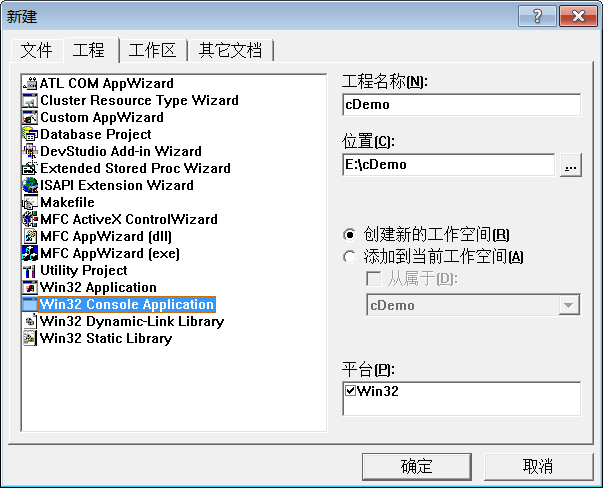
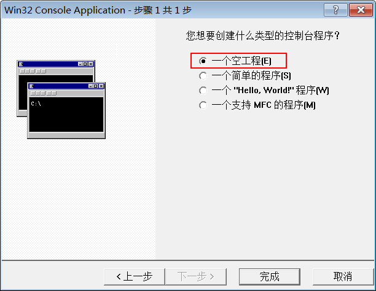
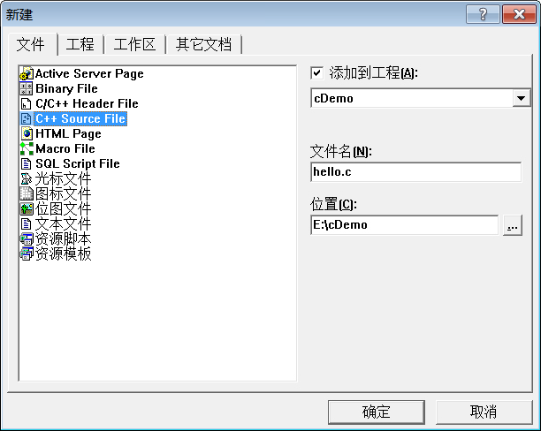
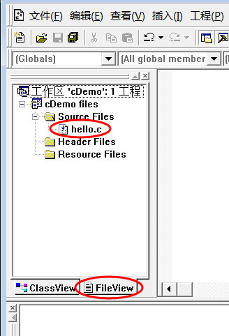

VC6.0（VC++6.0）使用教程（使用VC6.0编写C语言程序）
Visual C++ 6.0简称VC或者VC6.0，是微软1998年推出的一款C/C++ IDE，界面友好，调试功能强大。VC6.0是一款革命性的产品，非常经典，至今仍然有很多企业和个人在使用，很多高校也将VC6.0作为C语言的教学基础，作为上机实验的工具。本教程中的代码，也都是在VC6.0下运行通过。
VC6.0 确实有点老了，如果不是学校要求或者项目需要，建议使用 Visual Studio 代替，这里之所以讲解 VC6.0，是为了照顾在校生或者有特殊需求的读者。
下载地址：VC 6.0中文版下载
切换到“工程”选项卡，选择“Win32 Console Application”，填写工程名称和路径，点击“确定”，会弹出一个对话框询问类型，这里选择“一个空工程”，如下图所示：
点击“完成”按钮完成工程的创建。
该步骤是向刚才创建的工程添加源文件。
双击 hello.c，进入编辑界面，输入上节中的代码。

更加简单的方法是使用快捷方式，如下图所示：

保存编写好的源代码，点击运行按钮或 Ctrl+F5，如果程序正确，可以看到运行结果，如下图所示：

注意：编译生成的 .exe 文件在工程目录下的Debug文件夹内。以上面的工程为例，路径为 E:\cDemo，打开看到有一个Debug文件夹，进入可以看到 cDemo.exe。
在Debug目录中还会看到一个名为 hello.obj 的文件。
如果读者感兴趣，我们也提供了简单的说明：
1) .dsp文件：DeveloperStudio Project，工程文件（文本格式），用来保存当前工程的信息，例如编译参数、包含的源文件等，不建议手动编辑。当需要打开一个工程时，打开该文件即可。
2) .dsw文件：DeveloperStudio Workspace，工作区文件，和DSP类似。
3) .opt文件：IDE的Option文件，保存了与当前工程有关的开发环境的配置，例如工具条位置、打开的文件、光标位置等。
4) .plg文件：日志文件（HTML文件），保存了程序的编译信息，例如错误和警告等。
一个工程可以包含多个源文件和资源文件（图片、视频等），但只能生成一个二进制文件，例如可执行程序
一个工作区可以包含多个工程，能够批量生成多个二进制文件。
我们安装的较大的程序，安装目录中一般包含多个 EXE 和 DLL。对于这样的程序，可以先创建一个工作区，再创建多个工程，这样就能一次性生成所需的多个二进制文件。
VC6.0 确实有点老了，如果不是学校要求或者项目需要，建议使用 Visual Studio 代替，这里之所以讲解 VC6.0，是为了照顾在校生或者有特殊需求的读者。
安装VC6.0
微软原版的 VC6.0 已经不容易找到，网上提供的都是经过第三方修改的版本，删除了一些使用不到的功能，增强了兼容性。这里我们使用 VC6.0 完整绿色版，它能够支持一般的 C/C++ 应用程序开发以及计算机二级考试。下载地址：VC 6.0中文版下载
在VC6.0下运行C语言程序
C-Free 支持单个源文件的编译和链接，但是在VC6.0下，必须先创建工程（Project），然后再添加源文件。一个真正的软件，往往需要多个源文件和多种资源，例如图片、视频、控件等，通常是把它们放到一个文件夹下，进行有效的管理。你可以把工程理解为这样的一个文件夹，IDE通过工程来管理这些文件。工程有不同的类型，例如开发“黑窗口”的控制台程序，需要创建Win32 Console Application工程；开发带界面的GUI程序，需要创建Win32 Application工程。
1) 新建Win32 Console Application工程
打开VC6.0，在菜单栏中选择“文件 -> 新建”，或者 Ctrl+N，弹出下面的对话框：

切换到“工程”选项卡，选择“Win32 Console Application”，填写工程名称和路径，点击“确定”，会弹出一个对话框询问类型，这里选择“一个空工程”，如下图所示：

点击“完成”按钮完成工程的创建。
2) 新建C源文件
在菜单栏中选择“文件 -> 新建”，或者 Ctrl+N，弹出下面的对话框：

切换到“文件”选项卡，选择“C++ Source File”，填写文件名，点击确定完成。该步骤是向刚才创建的工程添加源文件。
3) 编写C语言代码
在工作空间中可以看到刚才创建的工程和源文件，如下图所示：

双击 hello.c，进入编辑界面，输入上节中的代码。
4) 编译并运行代码
你可以在“组建”菜单中找到编译、组建和运行的功能，如下图所示：更加简单的方法是使用快捷方式，如下图所示：
保存编写好的源代码，点击运行按钮或 Ctrl+F5，如果程序正确，可以看到运行结果，如下图所示：
注意：编译生成的 .exe 文件在工程目录下的Debug文件夹内。以上面的工程为例，路径为 E:\cDemo，打开看到有一个Debug文件夹，进入可以看到 cDemo.exe。
在Debug目录中还会看到一个名为 hello.obj 的文件。
.obj是VC/VS生成的目标文件，类似于C-Free下的.o文件。工程文件说明
进入工程目录 E:\cDemo，除了 hello.c，还会看到很多其他文件，它们是VC6.0创建的，用来支持当前工程，不属于C语言的范围，你可以忽略它们。如果读者感兴趣，我们也提供了简单的说明：
1) .dsp文件：DeveloperStudio Project，工程文件（文本格式），用来保存当前工程的信息，例如编译参数、包含的源文件等，不建议手动编辑。当需要打开一个工程时，打开该文件即可。
2) .dsw文件：DeveloperStudio Workspace，工作区文件，和DSP类似。
3) .opt文件：IDE的Option文件，保存了与当前工程有关的开发环境的配置，例如工具条位置、打开的文件、光标位置等。
4) .plg文件：日志文件（HTML文件），保存了程序的编译信息，例如错误和警告等。
一个工程可以包含多个源文件和资源文件（图片、视频等），但只能生成一个二进制文件，例如可执行程序
.exe、动态链接库.dll、静态链接库.lib等。工程类型决定了不同的配置信息，也决定了生成不同的二进制文件。一个工作区可以包含多个工程，能够批量生成多个二进制文件。
我们安装的较大的程序，安装目录中一般包含多个 EXE 和 DLL。对于这样的程序，可以先创建一个工作区，再创建多个工程，这样就能一次性生成所需的多个二进制文件。
关注公众号「站长严长生」，在手机上阅读所有教程，随时随地都能学习。内含一款搜索神器，免费下载全网书籍和视频。

微信扫码关注公众号